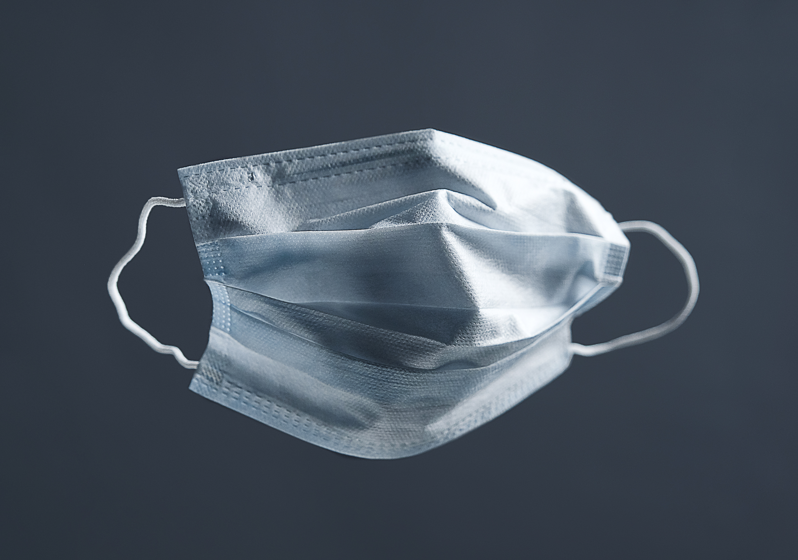

As with other viruses such as colds and flu, taking it easy and looking after yourself and crucial to your recovery.
There is not currently a cure for COVID-19 or a vaccine against coronavirus. The aim of treatment is to manage and reduce symptoms until you have recovered. Most people - around 80% - have an asymptomatic or mild infection which can be treated
at home. In this case, you should self-isolate for at least one week until you have recovered. One in five people who contract COVID-19 will require hospital care. Around 15% of cases experience a severe infection requiring oxygen to help
with respiratory symptoms. 5% experience critical infections, requiring ventilation. Those at a higher risk of severe or critical infections include older people and those with underlying health conditions.
The official word on face masks
Since the start of the coronavirus outbreak, the official advice from the World Health Organization has been that only two types of people should wear masks: those who are sick and show symptoms, and those who are caring for people who are
suspected to have the coronavirus. Nobody else needs to wear a mask, and experts have given several reasons for that.

Treating a high temperature
Get lots of rest
Drink plenty of fluids (water is best) to avoid dehydration – drink enough so your pee is light yellow and clear
Take paracetamol or ibuprofen if you feel uncomfortable.